Shopify & Full-Stack Engineer · Gurgaon, India · Remote
I build the storefront, the apps behind it, and the systems behind those.
I am the sole engineer behind a D2C business trading at ₹5 crore (~US$600K) monthly
GMV — an 800-SKU Shopify storefront hand-coded in Liquid, two custom Shopify applications that
replaced US$1,000+/month of third-party SaaS, an AI platform running 30+ domain-tuned
agents, and a cross-platform super-app on the Play Store. Alongside it I built and submitted
two commercial Shopify products of my own — a public multi-tenant app and a premium Online
Store 2.0 theme — both now in review for the App Store and Theme Store. Every system below was designed and
built from scratch.
Everything below is proprietary — it belongs to the businesses that paid for it — so there is no public
repository to browse and some URLs and admin systems can't be published on an open page. That is a
publishing constraint, not an access one: I have full access to every system here and I can demo
any of them live on a call — the storefront, the merchant admins, the app, the theme, the mobile
app — including the internal screens that aren't shown on this page.
What each write-up gives you is the problem, the constraints, the architecture, the decisions and
the measured result, plus screenshots of the running systems. That is the same material I would
walk a technical interviewer through, and I am happy to go deeper on any of it, including whiteboarding
the parts that can't be shown here.
Six systems get a full write-up. Three more are summarised at the end. Everything listed is live in
production or in review with Shopify.
Shopify LiquidOnline Store 2.0Custom cartGoKwik checkoutCore Web Vitals
~US$600K
Monthly GMV
800
SKUs across 40+ collections
60 → 90+
Mobile Lighthouse performance
0
Purchased themes or page builders
The problem
A devotional-goods catalogue is unusually hard to merchandise. A customer doesn't arrive looking for
"a bracelet" — they arrive looking for something appropriate to their rashi, their deity, or a
ritual they've been told to perform. That cuts across a normal collection structure, and the themes
flexible enough to express it came loaded with third-party JavaScript.
The constraints
Mobile-first. Most traffic arrives on mid-range Android over mobile data.
Non-technical merchandising. The catalogue team needed to re-merchandise without a developer.
A tight performance budget. Mobile Lighthouse performance started at 60.
800 SKUs with overlapping attributes — one product belongs in several taxonomies at once.
What I built
I wrote the theme from scratch in Liquid rather than buying one — no page builder, no purchased base. Every
section is one I own, which meant no inherited JavaScript to work around and no vendor upgrade path to break.
Shop-by-rashi and shop-by-deity merchandising across 40+ collections, so the catalogue
can be browsed the way customers actually think about it rather than by product type alone.
A custom cart with qualified upsells — suggestions are driven by what's already in the
cart rather than a fixed "you may also like" list.
Build Your Own Combo — a bundle builder with tiered discounting that reprices as items
are added, plus three-tier ritual add-ons that attach at cart and order level.
Vedic recommendation calculators that turn an advice-seeking visit into a guided
purchase by pointing the customer at a specific product.
GoKwik one-click checkout with COD verification.
A page-transition and motion layer and a conversion-focused product page template,
both built natively rather than pulled from a library.
Performance: 60 to 90+
The largest single contributor was removing third-party apps and rebuilding what they did natively — every
app removed took its script with it. Owning the theme end to end is what made the rest of the tuning
possible: with no inherited code on the page, everything left is there because I put it there.
The storefront and the systems around it. Blue nodes are customer-facing.
Result
A storefront doing ~US$600K/month with mobile performance at 90+, where the
catalogue team re-merchandises 40+ collections without engineering involvement.
The paid reviews app cost a subscription, injected its own script into every page, and locked the
display rules and widget design to its own template. Replacing it meant owning the review data, the
structured output search engines read, and the ordering rules that decide what a new visitor sees first.
What it has to handle
Ten thousand reviews across nine hundred products is past the point where anything can be done by hand.
The whole design assumption is that a non-technical team runs this daily: moderation, imports, display
rules and the widget's appearance all have to be theirs to change, without a developer and without a
deploy.
What I built
A moderation queue with real actions. Approve, hide, verify, pin to top, edit or
delete per review, with search across text, author and email, and filters by product, status, star
rating and media.
Bulk import that doesn't duplicate. The Excel template ships with a
product_handle dropdown of every live product, regenerated fresh from Shopify on
every download, so it always reflects newly added products and drops removed ones. Re-uploading
the same rows updates them instead of creating copies — which is what makes a spreadsheet safe to hand
to a non-engineer.
Photo hosting that stays inside Shopify. Customer images upload through the dashboard
and are stored on the store's own CDN, returning URLs to paste back into the import sheet — no external
media host to keep alive.
Merchant-controlled display order. Newest first, photos first, highest rating or most
helpful, with pinned reviews always ahead of the rule. That ordering decision is a conversion lever, so
it belongs to the merchandising team rather than to me.
A widget designer with live preview. Colours, sizes and card styling apply
store-wide on save, previewed in place before committing.
Backdating and verified badges on manual entry, plus an aggregate recompute that
rebuilds every product's star totals and averages after a bulk change or an edit made directly in the
Shopify admin.
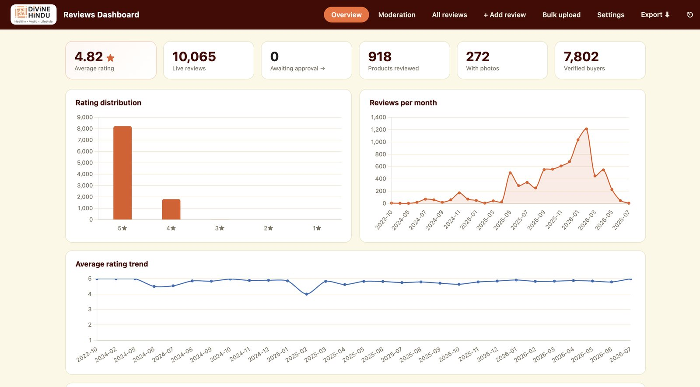
Overview — distribution, volume and rating trend
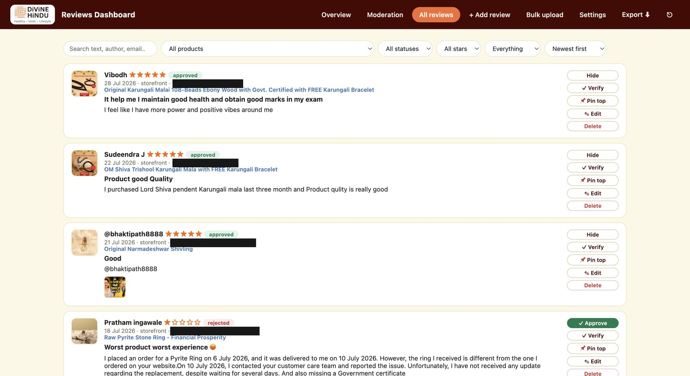
Moderation — approve, verify, pin, hide
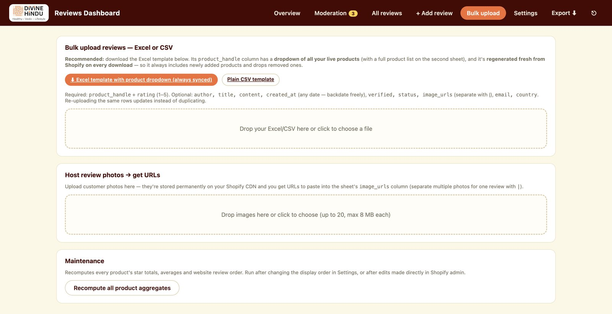
Bulk import with a Shopify-synced product dropdown
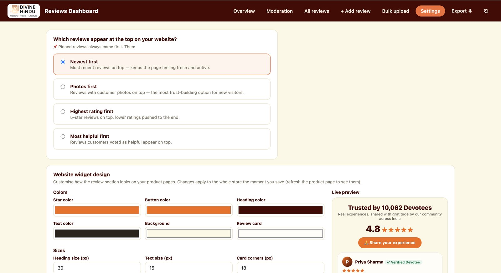
Display rules and widget designer
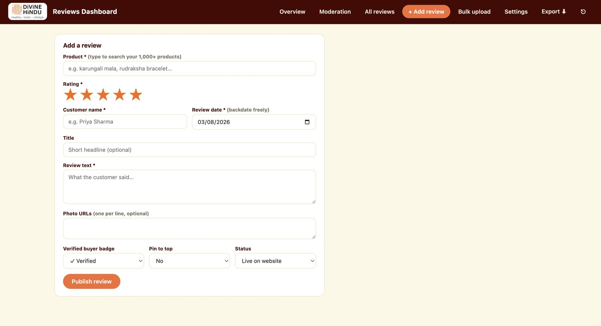
Manual entry with backdating
The widget on a product page
ReviewMaster — a public, multi-tenant Shopify reviews app
Architect & sole engineer · submitted to the Shopify App Store
Next.js 16 App RouterTypeScriptPrisma 6 · PostgreSQLAzure App ServiceApp Bridge · token exchangeTheme app extensionShopify BillingEtsy Open API v3
47
API routes across 35 service modules
17
Database models, all tenant-scoped
8 KBgz
Storefront widget, zero dependencies
Level 2
Protected Customer Data approval
Why build it
The in-house reviews platform above solves one merchant's problem. This is the same problem solved for
every merchant at once — a subscription SaaS competing directly with Judge.me, Loox and Okendo. Going
from single-tenant to public distribution changes almost everything: authentication, tenancy isolation,
billing, data protection and the app-review process all become the product rather than plumbing around it.
What it actually has to do
Know when an order was delivered rather than paid. Email the buyer at the right moment and stop
if they've already reviewed. Take photos and video from a phone without making them wait. Let the merchant
moderate first. Render on any theme without hurting Lighthouse. Push the aggregate into metafields so
Google and the Shop app pick it up. And never misrepresent a review's provenance — which is now illegal,
not merely tacky.
Order to published review
This pipeline is the product. Every step is asynchronous, retried and independently observable, and the
scheduling of work is deliberately separated from the doing of it.
The webhook only records intent. A mail-provider outage delays emails; it can never lose an order.
What makes it hold up
Failure is the retry. A failed send leaves nextSendAt in the past, so the
next sweep picks it up. No queue infrastructure, no dead-letter handling, and no cron that can double-send.
Media never blocks the response. Validation is synchronous — MIME allowlist plus
magic-byte sniffing — but the upload to Shopify Files runs after the response has flushed. The buyer never
waits on a CDN round trip.
Media lives in the merchant's own Shopify Files, not our storage. No storage cost to
carry, served from Shopify's CDN, and the merchant keeps their assets if they uninstall.
Reminders self-cancel. A submitted review, an unsubscribe or a bounce cancels everything
outstanding for that address.
Tenancy is checked at the query, not the route. Every authenticated query carries
storeId from the verified session token and ownership is asserted before any cross-entity
write, so a merchant can't reach another's data by guessing an ID.
Compliance enforced by the schema, not by policy
The FTC's Rule on Consumer Reviews (16 CFR 465) carries civil penalties north of US$50,000 per violation for
conditioning an incentive on what a review says. The EU Omnibus Directive and the UK DMCC Act say the
same thing.
So the incentive model has no minimum-rating field, and the grant function
cannot receive a rating — the caller has no way to pass one. There is nowhere in the type
system to express the illegal idea. A minRating column with a comment saying "don't set this
above 1" eventually gets set; a column that doesn't exist can't. Rewarding a photo is lawful, because
media is a content type rather than an opinion — a one-star review with a photo earns exactly what a five-star
one with a photo earns.
The same reasoning governs provenance. verificationStatus can only ever be
verified_buyer on the tokenised post-purchase path, because that is the only path with an order
to point at. CSV imports, manual entry and marketplace imports are structurally incapable of claiming
verification.
Authentication: the part that's genuinely hard
Embedded Shopify apps run in an iframe inside another origin's admin, where cookies are unreliable and
Safari's ITP blocks them outright. The app authenticates on App Bridge session tokens — a 60-second JWT
verified for issuer, destination, audience and expiry, then exchanged server-side for an offline access token.
That exchange is the install: no OAuth callback, no redirect, no state nonce to get wrong. Access
tokens live an hour and refresh tokens ninety days; both are encrypted at rest with AES-256-GCM. A
present-but-invalid session token is a hard failure rather than a silent downgrade to cookie auth, so an
attacker can't strip a header to select the weaker mechanism.
The bug worth the war story: Next's <Script strategy="beforeInteractive"> does not render
into <head> in the App Router — it emits a preload plus a body-queued shim. App Bridge
therefore never initialised, window.shopify stayed undefined, and every request silently fell
back to cookies. The page looked completely fine. I proved the fix by writing per-store telemetry that
recorded which mechanism had actually authenticated each request.
The rest of the surface
Collection — post-purchase requests with a 0–60 day merchant-configurable delay and up to
two reminders, a token-based buyer form that needs no account, photo and video reviews, a storefront
submission widget with honeypot and per-email rate limiting, and product-page Q&A.
Import — CSV with per-row error reporting, AliExpress listing scrape with
deduplication and star normalisation, and Etsy via OAuth 2.0 PKCE with listings matched to Shopify products
by title. Every imported review is source-labelled and never marked verified.
Display — nine widget layouts shipped as a theme app extension: 8 KB gzipped, no
framework, lazy-loaded via IntersectionObserver 400px before it enters the viewport, with
explicit media dimensions so it contributes no CLS. Plus JSON-LD for Google rich results and the
reviews.rating metafield the Shop app reads.
Operations — four subscription tiers gated server-side at every write path, bounce and
complaint handling through signed provider webhooks with a suppression list, automated retention (PII
redacted at 30 days post-expiry, rows purged at 730), and self-healing webhook registration.
Decisions I'd defend in a review
The storefront widget is deliberately not React. It runs on product pages, which carry
most of the weight in the Lighthouse score a merchant is judged on. Its source is heavily commented — the
FTC rules, the CLS reasoning and the escaping rules all need to survive the next person to touch it — so a
custom build step strips comments rather than minifying. Renaming identifiers would mean a stack trace from
a merchant's storefront points at a.b(c) and is worth nothing.
Schema migration lives inside the deploy.prisma db push runs in CI before
the container swaps, so the database is never behind the code that expects it. This replaced a recurring
failure where a deploy succeeded and then threw on the first query.
Provider-agnostic email. One interface, three implementations, selected by environment
variable. Not premature abstraction — AWS denied production SES access for a new account on an
azurewebsites.net domain, and the switch was a config change plus a webhook route rather than
a rewrite.
Build errors are not ignorable.typescript.ignoreBuildErrors is off
deliberately: it had previously masked five calls to a function that did not exist, each throwing at runtime
while the build went green.
What the app review actually gates on
Shopify's review process and any enterprise merchant's procurement ask the same questions, so this was built
rather than promised: Protected Customer Data Level 2 approval with all sixteen
data-protection questions answered against real implementation; a published DPA under GDPR Article 28 with
SCCs and UK/Swiss addenda, a sub-processor list, privacy policy and terms; the three mandatory GDPR
webhooks — customers/data_request, customers/redact, shop/redact —
implemented rather than stubbed; and a documented retention schedule, DLP posture, incident-response runbook
and environment separation. Every third-party credential is encrypted at rest.
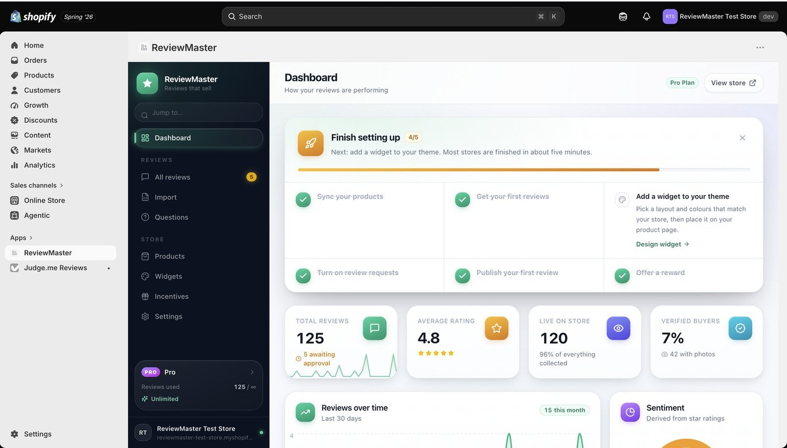
The embedded admin inside Shopify — onboarding checklist, collection metrics and the plan meter
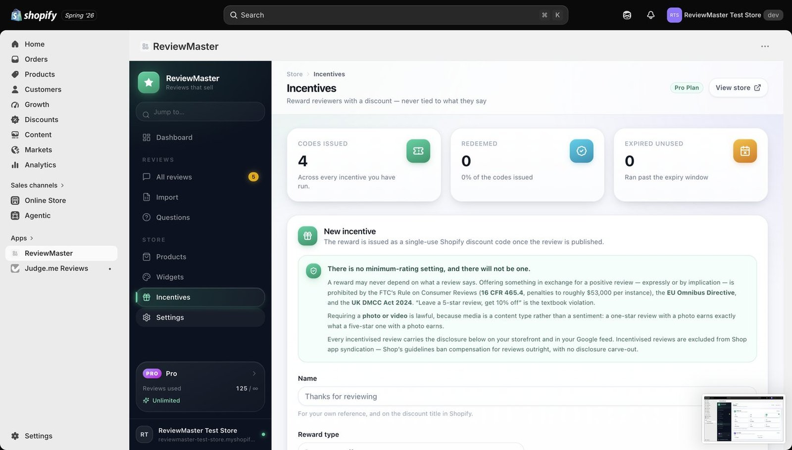
The compliance argument made visible: no minimum-rating control exists, and the reason is stated where a merchant will look for it
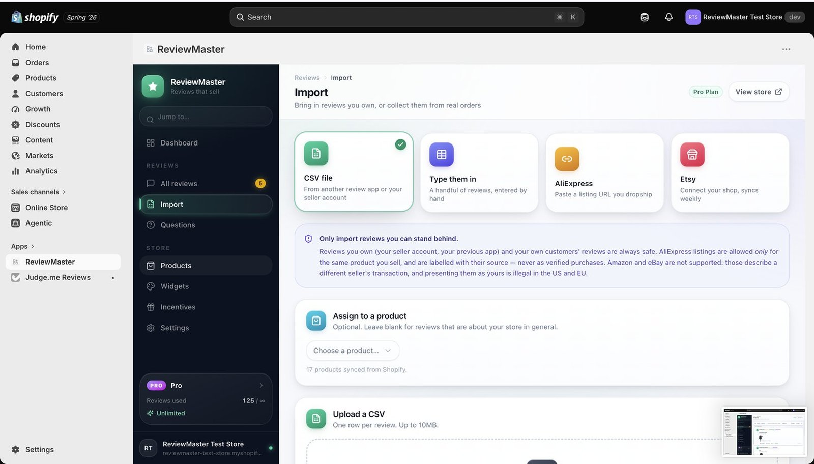
Import — CSV, manual, AliExpress and Etsy, with the provenance rules stated at the point of import
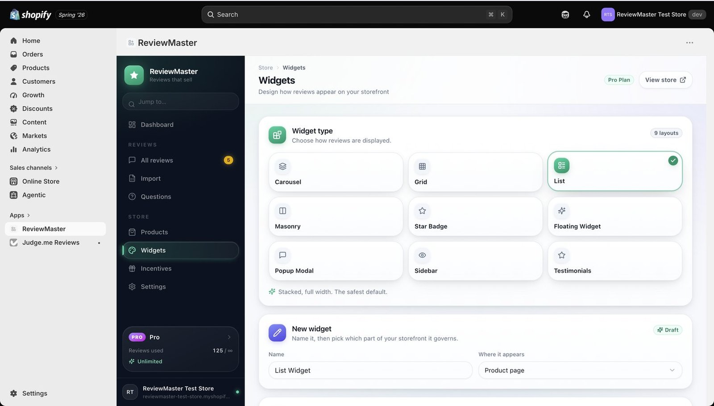
Nine storefront layouts, each shipped through the same 8 KB theme app extension
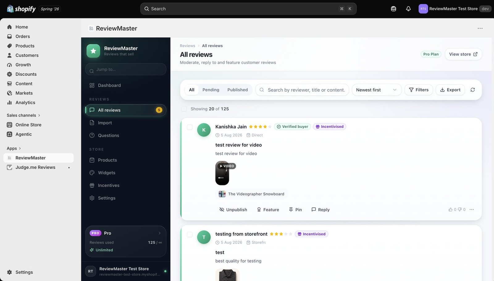
Moderation — verified-buyer and incentivised badges are set by the collection path, not by hand (reviewer emails redacted)
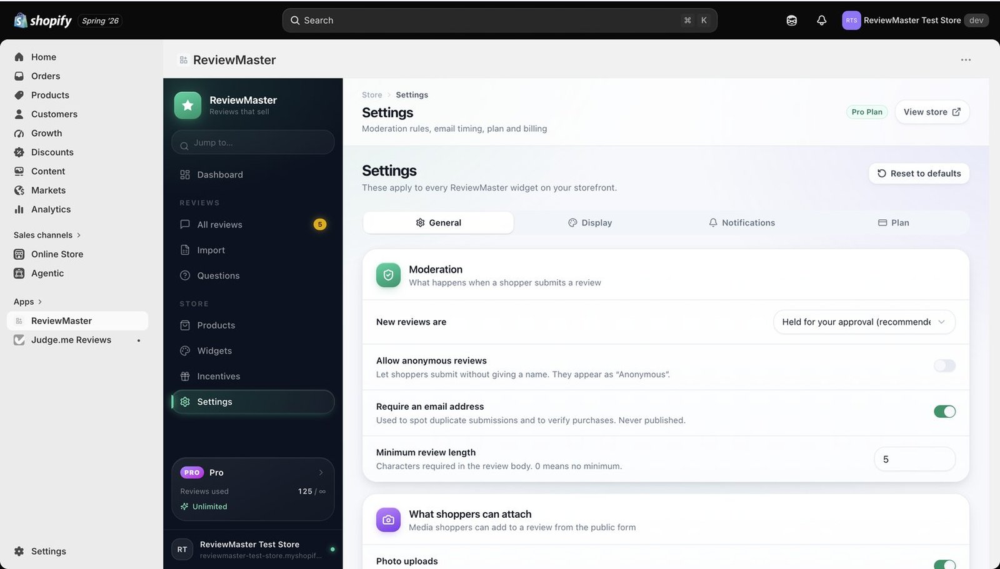
Merchant-owned moderation, media and display rules
Off-the-shelf loyalty apps couldn't express the programme the brand actually wanted: prepaid-only
cashback, a hard redemption cap, short FIFO expiry, WhatsApp nudges, and redemption happening
inside a third-party one-click checkout rather than through a coupon field. Divine
Points is a small, purpose-built service that owns the ledger and plugs into Shopify and GoKwik at
exactly the right seams.
The programme
1 Mudra = ₹1. Earn 25% of order value, credited when the order is paid. Redeem up to 25% of an eligible
cart above ₹999. Coins expire 45 days after earning, drawn down oldest-first. Cancel or refund reverses
earned coins and restores redeemed ones. Every one of those values is admin-configurable at
runtime — including per-slab and new-versus-repeat earn rates and per-product overrides — with
no redeploy.
The redemption path
The hard part isn't the arithmetic, it's where redemption happens. Coins are spent inside GoKwik's
one-click checkout, which means a third party is quoting the customer a balance my service owns.
Redemption is settled from the order webhook, idempotent per order — so the ledger can't be gamed from the client.
What makes it correct
Every surface is separately authenticated. Four of them: the storefront API behind
Shopify's signed App Proxy, a shared-secret wallet API for GoKwik, a shared-secret events API, and
HMAC-verified Shopify webhooks — plus an admin portal on its own key. Secret comparisons are timing-safe.
Idempotency everywhere. A unique order_id on credits, checkout_id
on redemptions, per-event keys on bonuses. Webhook retries can't double-credit or double-deduct.
Precise restores. Each earn event is a lot with its own remaining balance and expiry; a
redemption records the exact lots it consumed, so a refund restores the right coins to the right lots
rather than approximating.
Self-healing. A pending redemption auto-restores after a TTL if the checkout is
abandoned. The cart-drawer path issues a one-time discount code with the same server-side cap and the same
auto-restore.
One identity. Phone numbers are normalised to E.164 with a one-time backfill migration,
so web, app and checkout resolve to a single wallet.
Fraud caps. Issuance caps and registration/device checks flag or block abnormal credit
activity, with an append-only transaction log behind everything.
What the merchant actually operates
The service ships with its own admin console rather than a settings page. Marketing configures earn and burn
rules, per-product and per-collection cashback overrides, the referral programme and the customer-facing
widget's copy and colours. Operations works from transaction logs, exclusions, caps and flags, and a manual
adjustment trail. Finance pulls issuance, redemption, expiry and outstanding-liability reports as CSV or
Excel. Migration and balance-import tools existed so the switch off the paid SaaS could carry every existing
customer balance across in one pass.
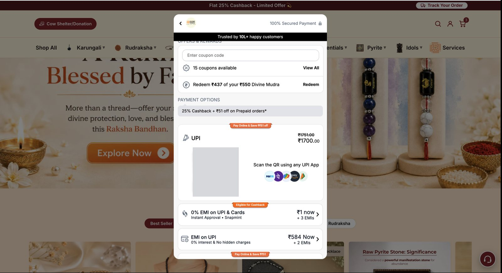
Redemption inside GoKwik one-click checkout — the wallet quotes ₹437 of a ₹550 balance against a ₹1,751 cart, the 25% cap applied server-side
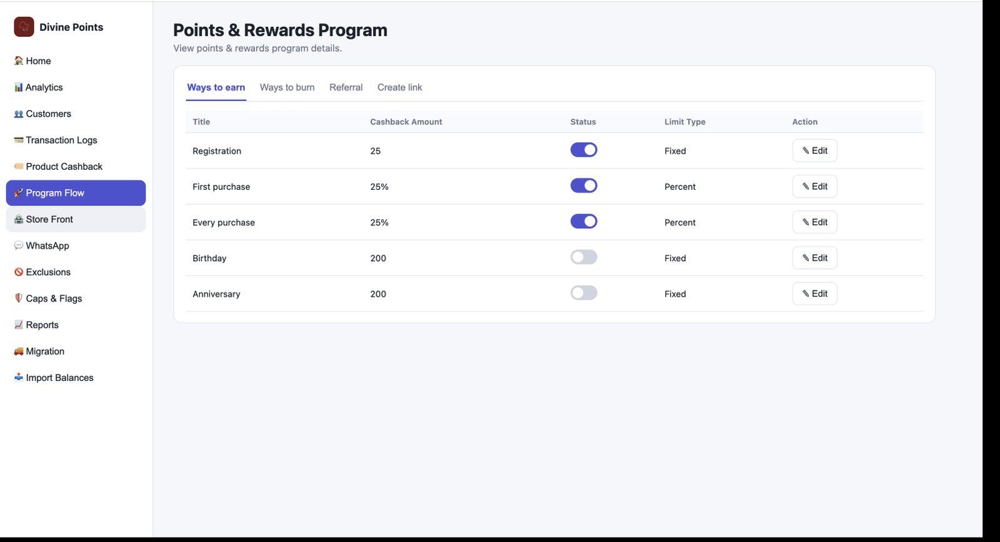
Program flow — ways to earn and burn, each rule fixed or percentage, individually switchable
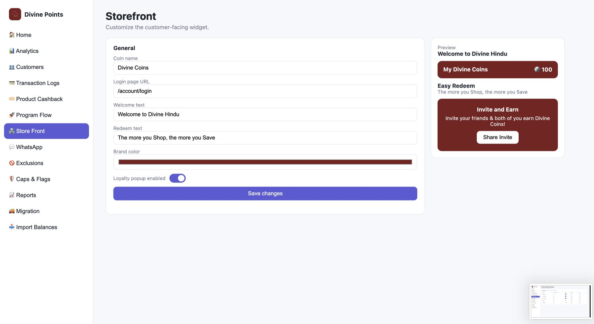
Storefront customiser — coin name, copy, brand colour, live preview of the customer-facing widget
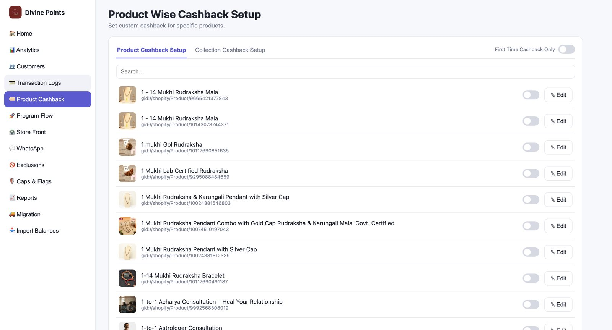
Per-product and per-collection cashback overrides, resolved against the Shopify product catalogue
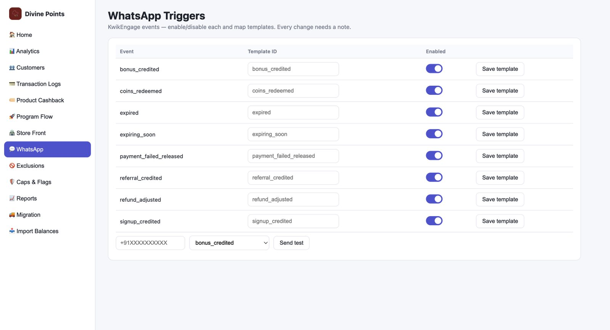
Lifecycle messaging — one toggle and template mapping per wallet event, with a send-test path
Three things that normally live in separate apps, stitched into one: authentic devotional
shopping, a full Vedic astrology suite that runs entirely on the
device, and guided devotion — daily rituals, live astrologer chat, an AI pandit. It shares
catalogue, customers and loyalty wallet with the Shopify storefront, so a customer is the same person
everywhere.
The design spine
The phone number is the identity. OTP login in the app and KwikPass on the web both
resolve to the same E.164 number, which keys the loyalty wallet and the consultation wallet. Shopify
stays the system of record for catalogue, orders and customers; everything else integrates around it
rather than duplicating it.
Two client surfaces, one Shopify system of record, five single-purpose services. The astrology engine runs on the device.
The parts worth talking about
A self-contained Vedic astrology engine. Planetary positions from VSOP87 for planets and
ELP for the moon, with ΔT and nutation tables, ayanamsa, house systems, KP sub-lords, vargas, ashtakvarga,
dasha timelines and guna-milan — all in TypeScript, executed on the device. No astrology API dependency,
zero latency, and it works without a signal.
Checkout that stays native. Shopify's Checkout Sheet Kit keeps payment in a first-class
sheet instead of bouncing out to a browser, with completion callbacks that reconcile the cart.
Re-skinnable by config. Branding, theme, navigation tabs, home layout and service URLs
are driven by a config file plus environment, so the same codebase can front a different store.
Continuous delivery. Native binaries through EAS Build; content and logic pushed
over-the-air, so a fix doesn't wait on an app-store review.
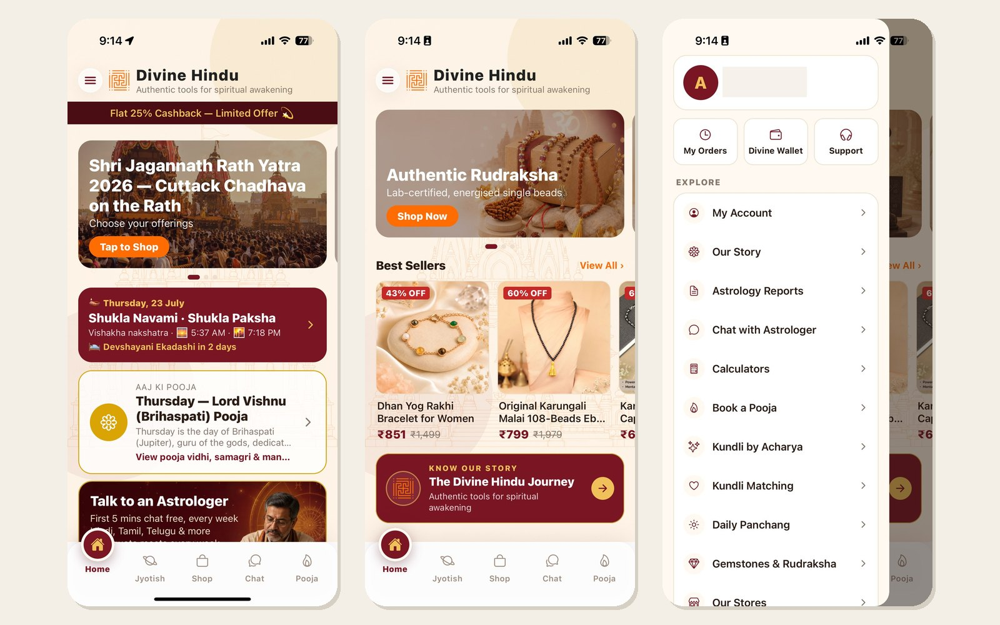
Home, catalogue and the navigation drawer — commerce, panchang, daily pooja and astrologer entry points on one surface
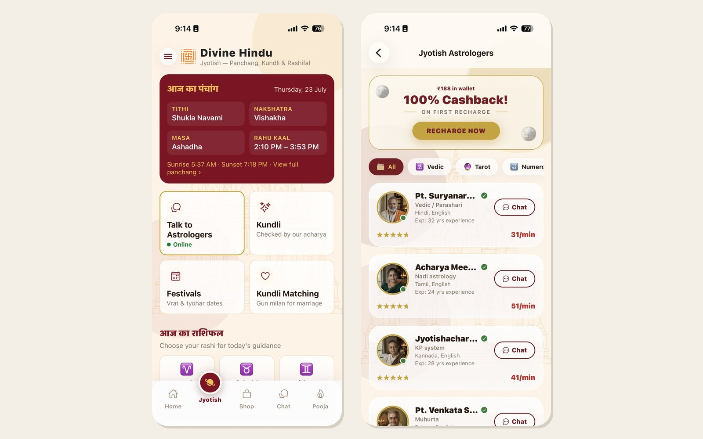
Jyotish — panchang, kundli, matching and rashifal computed on-device, alongside the astrologer roster and consultation wallet
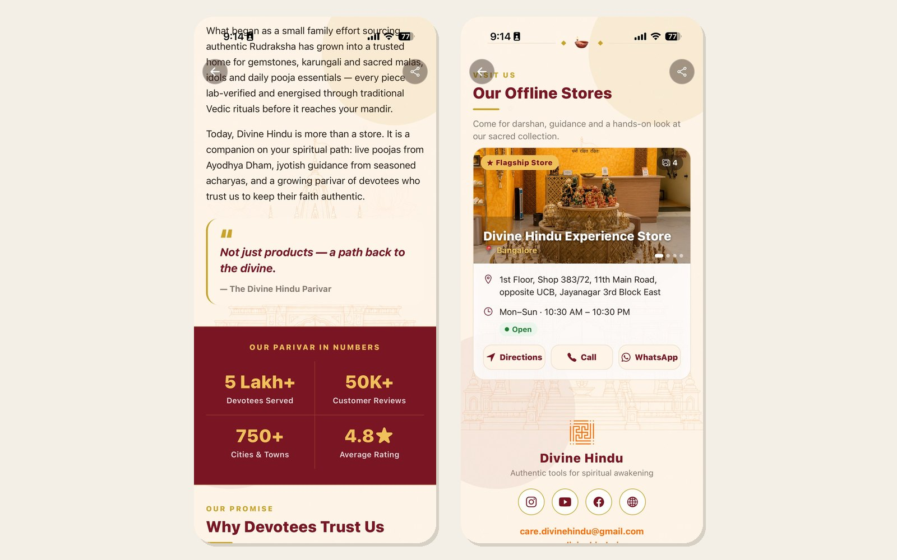
Editorial and store-locator screens driven from the CMS, so content ships over the air without a store review
Astrology report & lead-delivery platform
Architect & engineer · live in production · services ↗
Two tiers, two pipelines, one core. The free 2-page Kundali is the lead magnet — real
chart data computed from ephemeris, not templated text. The paid tier is a
120+ page personalised report written by a roster of 30+ AI astrologers,
each tuned to a distinct service, generated and delivered automatically about thirty minutes after
checkout. Both tiers share the chart engine, the PDF renderer and the delivery layer.
Why two services
The chart and PDF engine is Python — Swiss Ephemeris and ReportLab have no real equivalent elsewhere.
The commerce and messaging automation is Node, which was already handling conversational flows. They
integrate over HTTP behind a shared admin token rather than being merged: different runtimes,
different scaling characteristics, independent deploys.
Two services, one chart-and-PDF core, two interchangeable WhatsApp transports. Delivery confirmation flows back into the database — it is never inferred.
Pipeline 1 — free Kundali, the lead magnet
A visitor submits name, gender, birth date, time and place, and a WhatsApp number. Within minutes they get
a 2-page chart PDF: a North-Indian Lagna chart with all twelve bhavas, Moon sign, Nakshatra, Ascendant,
ruling planet, Nakshatra lord and current Mahadasha on page one; narrative highlights, dasha meaning,
remedies keyed to the dasha lord, three product recommendations and a CTA on page two.
Two decisions in that path matter more than they look. The HTTP request never touches the
database — it appends a line to a JSONL inbox and returns, so a burst of form submissions can't
contend on SQLite. And field mapping is alias-tolerant: the upstream form is edited by
non-engineers and field names drift, so keys are normalised before matching rather than assumed.
Pipeline 2 — the paid report
The paid report is the detailed product — 120+ pages, drawing on the astrologer roster for the service the
customer bought. Delivery runs as a two-phase sweep on a 30-second tick, driven entirely by order tags
rather than a queue table:
Generate at 28 minutes — pull birth details from line-item properties, call the chart
API per report type, write the PDF URLs into the order note, tag report-ready.
Deliver at 30 minutes — parse those URLs, send each as a WhatsApp document template,
tag report-sent or report-wa-failed.
Recover on demand — a report-resend tag re-sends from the already-stored
URLs without regenerating anything. The trigger tag is removed before sending, so overlapping
ticks can never double-send.
Tags rather than a queue because the storefront is already the source of truth for orders: tags are
transactional, visible to non-engineers in the admin, and survive any redeploy of the worker. Missing birth
details short-circuit to a pending state and trigger an automated WhatsApp request to the customer, rather
than failing quietly.
The failure worth reading about
The messaging gateway returned HTTP 200 for template sends that WhatsApp later rejected
asynchronously. The code treated 200 as success and marked records sent; the order automation
then tagged orders report-sent. Every template send failed for over a month while every
internal signal — database rows, order tags, dashboards — reported success.
It surfaced only on reading the provider's own message logs, where the message bodies still contained raw
{{1}} placeholders: the gateway was accepting the request and silently discarding the template
parameters. What I fixed, in order of importance:
An acknowledgement is not a delivery. 200 now means submitted and nothing more.
A delivery-status webhook resolves submitted into delivered or
failed using the provider's own callbacks.
A reconciliation sweep requeues anything still unconfirmed after a grace window, so
nothing sits in limbo indefinitely.
Provider message IDs captured on every send, so a callback can be matched back to a customer.
Failure counters and a degraded flag on a health endpoint — a stalled
pipeline is now one HTTP request away from visible, instead of invisible for a month.
The rewrite also made the transport swappable: the BSP gateway and Meta's Cloud API are both supported and
selected at runtime by which credentials are present, with automatic fallback. A vendor problem is now a
configuration change rather than a code change.
delivered is the only success state, and only an external confirmation can set it. Attempts are bounded so a permanently bad recipient can't loop forever.
Three more production lessons
SQLite write contention on network-backed storage. WAL mode is ineffective on the
PaaS host's networked filesystem, so concurrent writes produced database is locked under
real traffic. Fixed in three layers: the JSONL inbox keeps the request path off SQLite entirely, leads
moved to their own database with exactly one writer, and the remaining paths retry on lock.
CPU-bound rendering froze the event loop. PDF generation holds the GIL, so health
checks and every endpoint timed out during a render. Rendering moved to a subprocess —
subprocess.run releases the GIL while waiting — with an in-process fallback so a rendering
environment problem degrades rather than breaks.
Background workers on a PaaS host. A fork-based daemon silently never ran under the
platform's process model. A plain daemon thread runs reliably, publishes a heartbeat, and the health
endpoint reports its age — a dead worker is now detectable rather than merely quiet.
What I'd do differently
I chased two plausible root causes before reading the provider's raw message log, which contained the
answer in plain sight. Cheap observation beats expensive inference — look at the actual bytes on the wire
first.
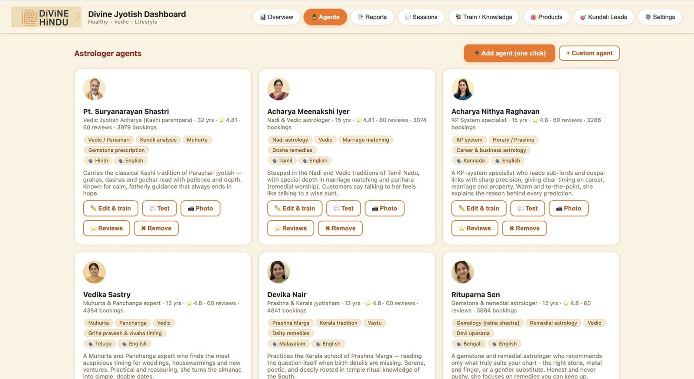
The agent roster — each one a distinct tradition, specialism set and language, added in one click or configured from scratch
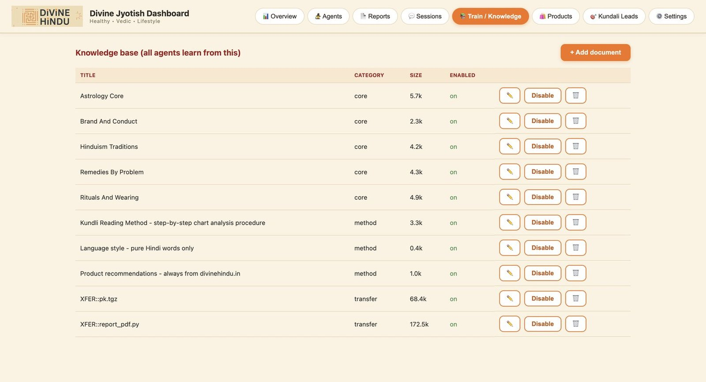
The shared knowledge base every agent reads from — doctrine, method and conduct as separately toggleable documents
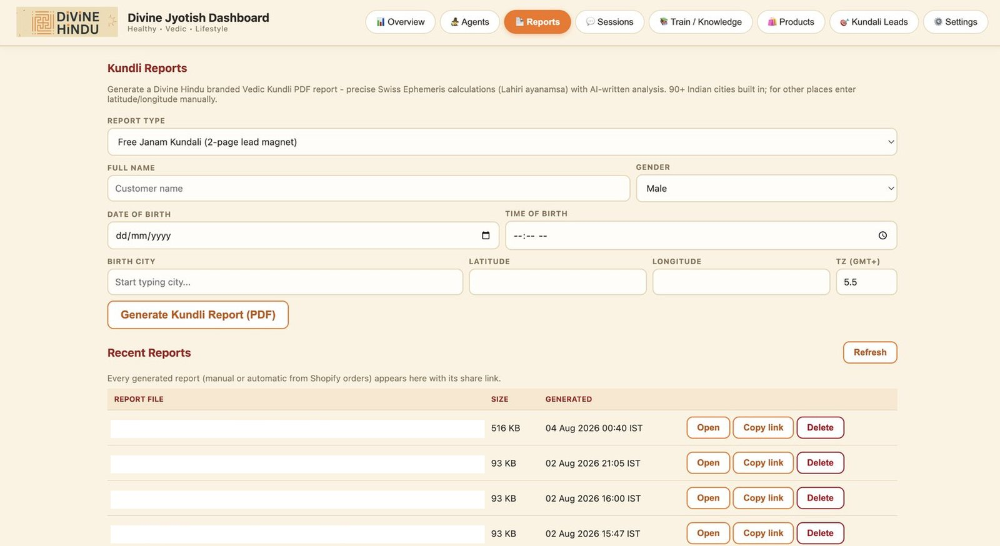
Report generation and the delivery log — customer names and share links redacted
Also shipped
Three more production builds — same approach, shorter write-up.
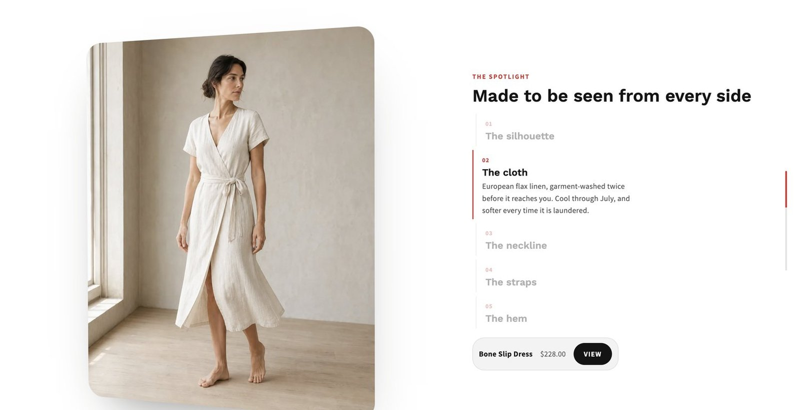
Premium Online Store 2.0 theme
Submitted to the Shopify Theme Store · under review
A commercial theme covering every major catalogue style, with a 3D product showcase, before/after
comparison slider, shoppable lookbook hotspots, mega menu, quick view, wishlist and dark mode — built
on Online Store 2.0 so a merchant can restructure any page without code.
Devotional-goods storefront with a combo builder using stacked volume discounts and real-time
repricing, a cart-value-gated flash-deal unlock, a ritual blessing add-on and lab-certificate
traceability.
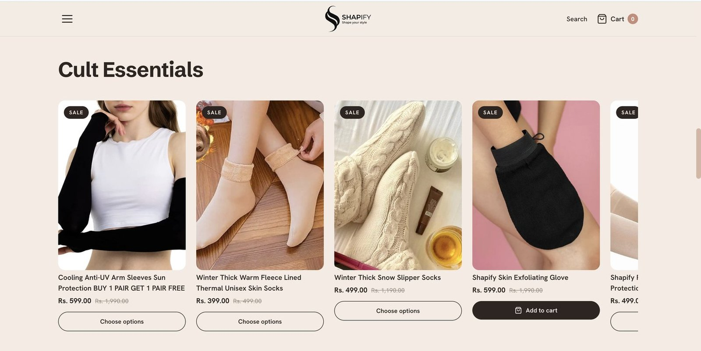
Shapify
Custom storefront, built from scratch ·
shapify.in ↗
D2C apparel storefront with video-led product pages, BOGO and gift-with-purchase promotion logic,
prepaid-order incentive pricing, free-shipping threshold progress and courier tracking.
Working together
I'm open to remote roles, contracts and long-term engagements. The systems above are what I do: Shopify
storefronts, public and custom applications, commercial themes, and the internal platforms that make a
commerce business actually run.
Because the code is proprietary I can't hand over a repository — but I can demo any of these systems
live, including the merchant admins and internal screens that aren't published here, and walk through
architecture, decisions and trade-offs in as much depth as you want. I'm also happy to solve a scoped problem
as a paid trial if that's more useful than talking.